동탄이 기다려온 역사적 랜드마크의 시작
THE NEXT
HISTORY
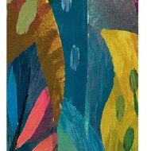
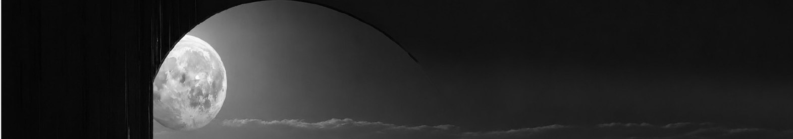
동탄을 이끄는새로운 역사이자,영원한 상징의 첫 장을 열다 아크메르 동탄
삶의 모든 것을 소유하는 동탄의 새로운 상징이 될
역사적 랜드마크를 완성합니다.
아크메르(ACMER)는 Acme(정점)와 'R'을 조합한 이름으로, 동탄의 모든 기준을 넘어선 상징이자 정점의 라이프를 의미합니다.
- Revolution대담한 새로움
- Richness넘치는 충만함
- Rarity독점적 특별함
- Relax완전한 여유
- Respect압도적 동경
- Acme정점
※ 상기 이미지는 소비자의 이해를 돕기 위한 이미지로 실제와 상이합니다. ※ 본 홍보물의 현황은 관계기관의 홈페이지 등을 참조하여 작성된 것으로 사업계획 및 일정은 당사와는 무관하며, 추후 변경될 수 있습니다.
광활한 공원이 일상의 풍경이 되다
CENTER OF
NATURE
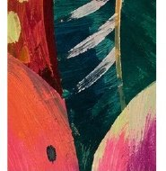
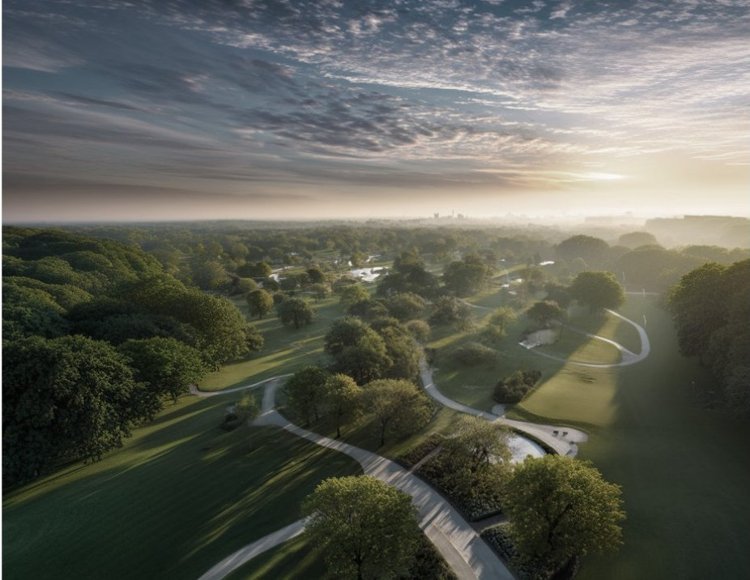
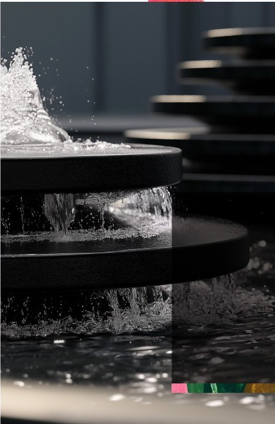
모두 마주하는 곳에서 펼쳐지는
더블 파노라마 뷰(일부 세대),
그리고 경부고속도로 지하화로
한층 더 깊고 진화된 쾌적함을 당신께 선사합니다.
※ 공원, 녹지, 조망 및 주변 환경은 향후 개발계획, 관계기관의 사업 추진 및 현장 여건 등에 따라 변경될 수 있으며, 조망은 동·층 및 향에 따라 차이가 있습니다.
집에서 역까지의 모든 경계를 지우다
SPEED
TRAFFIC
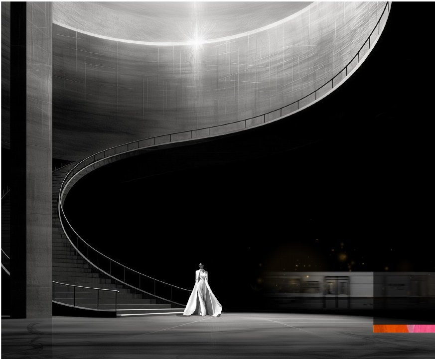
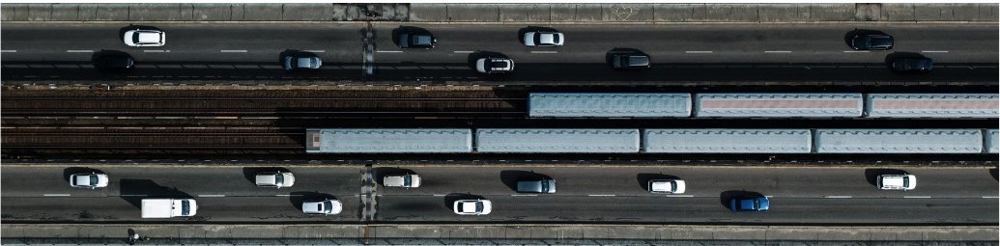
외부 세상의 방해 없이 단숨에 플랫폼으로 이동하는 단지,
도시의 경계마저 지운 초고속 라이프가 펼쳐집니다.
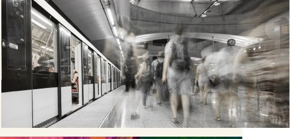
ㆍ반송역(예정, 가칭) : 국토교통부고시 제 2026-63호「인덕원~동탄 복선전철 건설사업 실시계획 변경 승인」
출퇴근길이 더욱 여유로워지다
WORK-LIFE
CONNECTION
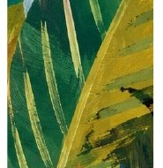
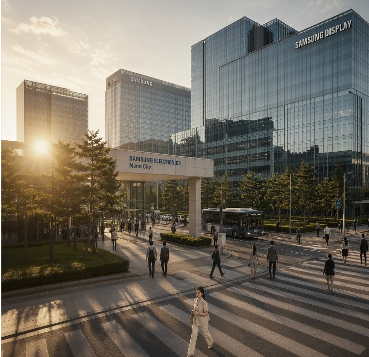
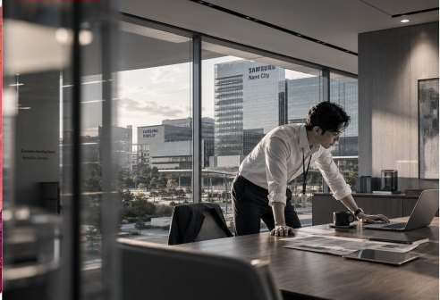
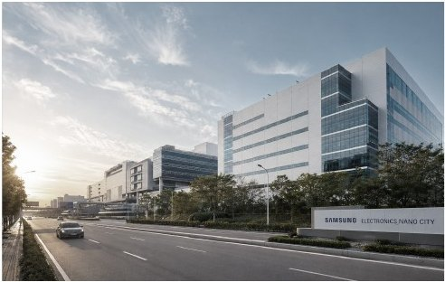
삼성전자 화성·기흥 캠퍼스가 인접해
보다 여유롭게 도보·셔틀 통근이 가능한
진정한 직주근접 입지의 가치를 누립니다.
아이의 교육을 세계 수준으로 높이다
GLOBAL
EDUCATION
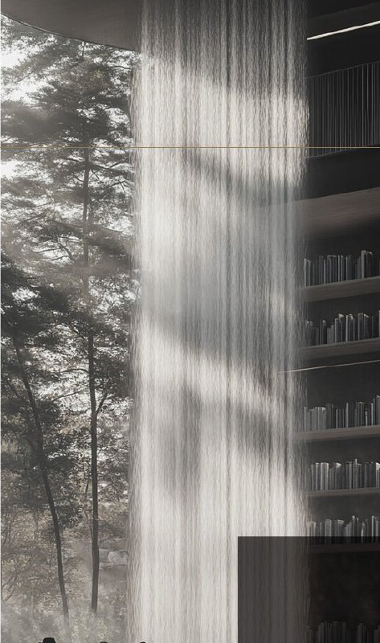
인접한 초중고까지, 아이의 미래를 위한
최상의 교육 환경으로 동탄 교육의
새로운 기준을 제시합니다.
동탄을 상징하는 랜드마크를 세우다
SIGNATURE
LANDMARK
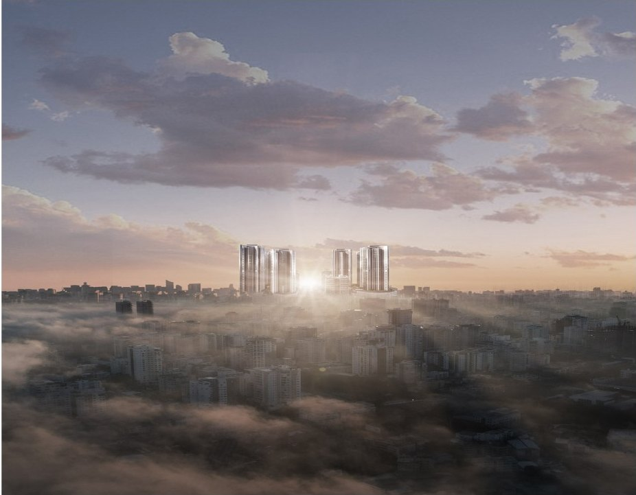
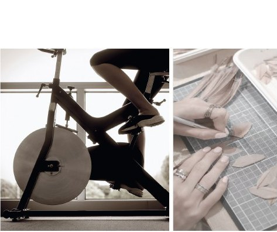
폭넓은 평형 라인업과 고품격 커뮤니티는 물론
세계적 아티스트 자나이나 미레이로의 디자인을 담은 외관과
클래스가 다른 하이엔드 마감재 특화까지
건축에 예술을 입히는 상징적인 랜드마크를 완성합니다.
동탄의 가장 완벽한 삶을 위해 모든 것이 완성될 자리에 서다
EXCEPTIONAL
LOCATION
- Fast Movement
- 동탄~인덕원선 반송역(예정, 가칭) · 동탄역(SRT, GTX-A) · 기흥동탄IC · 지역내 최다 광역버스 노선
- Perfect Life
- 삼성전자 화성·기흥 캠퍼스 직주근접입지 · 동탄 프리미엄 아울렛 · 롯데백화점 · 스타필드마켓
- Central Park
- 동탄 센트럴파크 · 반석산 근린공원 · 홍사용 문화거리 · 동탄여울공원 · 자라뫼공원 · 오산천
- Excellent Edu
- 판매시설 내 국제학교 유치 · 도보거리 학동초 · 석우중·동탄고 등 인접 · 동탄 남광장 내 학원가
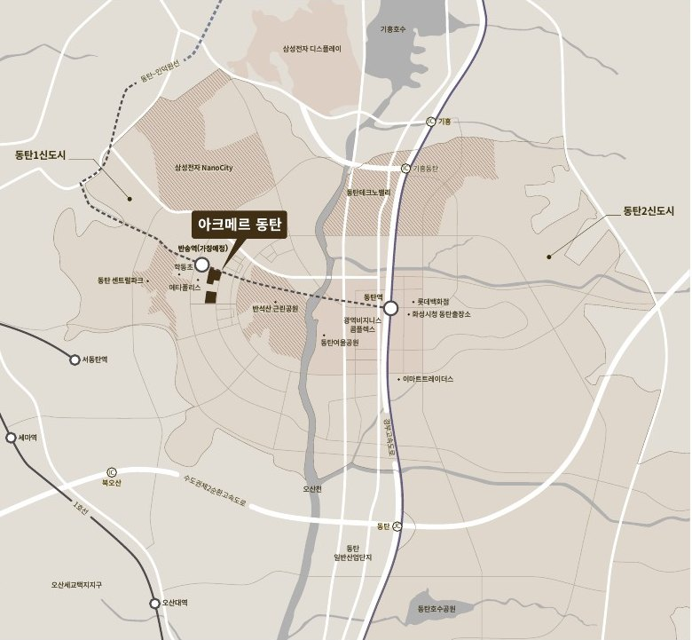
※ 상기 이미지는 소비자의 이해를 돕기 위한 이미지로 실제와 상이합니다. ※ 본 홍보물의 현황은 관계기관의 홈페이지 등을 참조하여 작성된 것으로 사업계획 및 일정은 당사와는 무관하며, 추후 변경될 수 있습니다. ㆍ반송역(예정, 가칭) : 국토교통부고시 제 2026-63호「인덕원~동탄 복선전철 건설사업 실시계획 변경 승인」
분양 정보
ACMERDONGTAN
총 1,808세대 (전용84 ~ 188㎡) · 최고 49층
2026. 9월 오픈예정
- 견본주택
- 경기도 화성시 오산동 986-1번지 일원
카카오톡 채널 친구맺고 더샵의 다양한 소식과 이벤트를 제일 먼저 만나보세요
- ① 카톡 상단 검색창 클릭
- ② QR코드 스캔
- ③ 설문조사
- ④ 홈에서 채널추가
| 구분 | 시행 | 위탁 | 시공 |
|---|---|---|---|
| 95번지 | KB부동산신탁(주) | 신우개발(주) | 포스코이앤씨 |
| 99번지 | (주)무궁화신탁 | 화우디앤씨(주) | 포스코이앤씨 |
※ 본 홍보물은 소비자의 이해를 돕기 위한 사전홍보물로 실제와 다를 수 있으니 견본주택 및 현장을 방문하시어 직접 확인하시기 바랍니다. ※ 본 홍보물의 사업개요 및 규모 등은 향후 「주택공급에 관한 규칙」 등 관계 법령에 따라 변경될 수 있으니 분양 당시 입주자모집공고를 반드시 확인바랍니다. ※ 건물의 시공상 하자에 대하여는 집합건물의 소유 및 관리에 관한 법률 제9조의2 및 동법시행령 제5조, 공동주택관리법 제36조 및 동법시행령 제36조에 의거 적용됩니다.